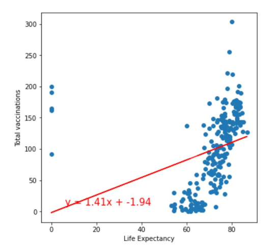

Life expectancy at birth is defined as how long, on average, a newborn can expect to live, if current death rates do not change. Life expectancy at birth is one of the most frequently used health status indicators. When looking at the life expectancy alone, weak correlation with total number of vaccinations can be observed. In this case, Pearson’s correlation coefficient is 0.31. This relationship, although weak based on this particular dataset, is observed as vaccinations lead to increased life expectancy . Also, generally, wealthier countries have a higher average life expectancy than poorer countries. This can be argued to be achieved through higher standards of living and more effective health care systems.
